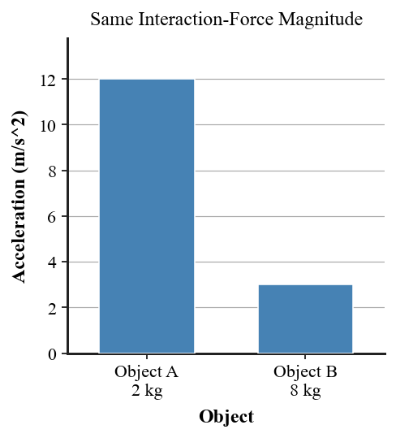

Practice focus: Identify force interactions and explain Newton's Third Law using action-reaction pairs that act on different objects.
Complete: Newton's Third Law forces are equal in size and __________ in direction.
Do action-reaction forces act on the same object or different objects?
Identify the interacting objects when a student pushes on a wall.
A bat hits a baseball. Name one force in the action-reaction pair.
A foot pushes backward on the ground. Which object pushes forward on the foot?
A paddle pushes water backward. Which object pushes the paddle/boat forward?
A car and bug collide. Compare the sizes of the interaction forces: equal or unequal?
Why do equal-and-opposite third-law forces not cancel on one object? Answer in one phrase.
Define a system in a physics model.
A force between two objects both inside a chosen system is called internal or external?
A force exerted on the chosen system by something outside it is called internal or external?
Two skaters push apart. Identify the direction of the force on each skater.
A student pushes a wall with 30 N. Determine the force the wall exerts on the student and state its direction.
A car and bug collide. The car exerts 120 N on the bug. Determine the force the bug exerts on the car.
Two skaters push apart with an interaction force of 60 N. One has mass 30 kg and the other 60 kg. Calculate each acceleration and compare.
A bat exerts 500 N on a ball during contact. State the magnitude and direction of the ball's force on the bat.
A swimmer pushes water backward with 80 N. Determine the magnitude and direction of the water's force on the swimmer.
Choose the student as the system in a student-wall interaction. Classify the wall's force on the student as internal or external.
Choose both skaters together as the system. Classify the skater-on-skater interaction forces as internal or external.
A tire pushes backward on the road. Identify the external horizontal force that can accelerate the car forward.
Use the acceleration bar chart: two objects experience the same interaction-force magnitude but have different masses. Which object accelerates more?

A 3 kg cart and a 9 kg cart push apart with equal force magnitudes. Rank their acceleration magnitudes.
A book rests on a table. Identify a third-law pair involving the book and table, then distinguish it from the balanced forces on the book.
A rocket pushes exhaust downward. Identify the reaction force and the object it acts on.
A car and bug exert equal forces on one another. Explain why the bug can have much greater acceleration without violating Newton's Third Law.
A student says, “Action-reaction forces cancel because they are equal and opposite.” Correct the claim by identifying the objects each force acts on.
Explain why the wall's force on a student occurs during the same interaction rather than after the student pushes.
Two skaters push apart. Explain how Newton's Third Law and Newton's Second Law together predict equal forces but different accelerations when masses differ.
Choose the system as “boat plus paddler” while a paddle pushes water backward. Identify the action-reaction pair, classify the water's force on the boat system as internal or external, and defend whether it can accelerate the system.
Two students disagree: A says equal-and-opposite interaction forces always cancel; B says they act on different objects and do not cancel on one object. Evaluate both explanations using a real interaction and a clearly defined system.